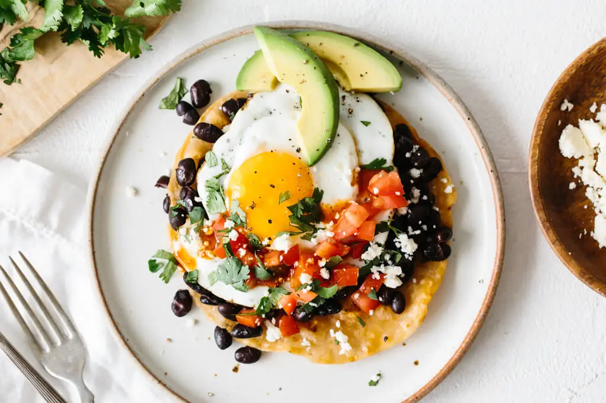

Rancheros
Home
Huevos rancheros are the most perfect vegetarian meal. There, I said it. Huevos rancheros (or rancher's eggs) are a typical breakfast served at Mexican farms, featuring corn tortillas and fried eggs topped with plenty of warmed salsa. The name huevos rancheros translates as “ranchers eggs”. The idea of ranchers eggs comes from the fact that this is a traditional mid-morning dish among rural Mexican farms. The eggs in this beloved Mexican breakfast dish are sauced with a ranchero-style sauce of roasted tomatoes, spicy ancho chiles and smoky chipotles. To make breakfast easier, make the sauce ahead of time and reheat to serve, adding a bit of water to thin if necessary.

Ingredients
5 tomatillos, husked and halved
2 tbsp coarsely onion
1 to 2 serrano peppers
3 garlic cloves,
1 spoon chicken bouillon granules
15 ounce seasoned recipe black beans
8 large eggs
1 cup shredded Manchego cheese
8 tostada shells, warmed
1/2 cup sour cream
Chopped tomato, sliced
avocado and minced fresh cilantro, optional
Nutrition Facts
Calories 322
Total Fat 21.5g
Cholesterol 118.5mg
Sodium 780.5mg
Total Carbohydrate 19.5g
Vitamin C 11.5%
Vitamin A 26%
Procedure
Place the tomatillos, onion, pepper, garlic and bouillon in a food processor.
Cover and process until finely chopped; set aside. In a small saucepan, mash beans.
Cook on low until heated through, stirring occasionally.
Meanwhile, break eggs in batches into a large nonstick skillet coated with cooking spray.
Cover and cook over low heat for 5-7 minutes or until eggs are set. Sprinkle with cheese.
To serve, spread beans over tostada shells; top with eggs, tomatillo sauce and sour cream. Garnish with tomato, avocado and cilantro if desired.
Expert Guide
Back ←
Scroll to Top ↑